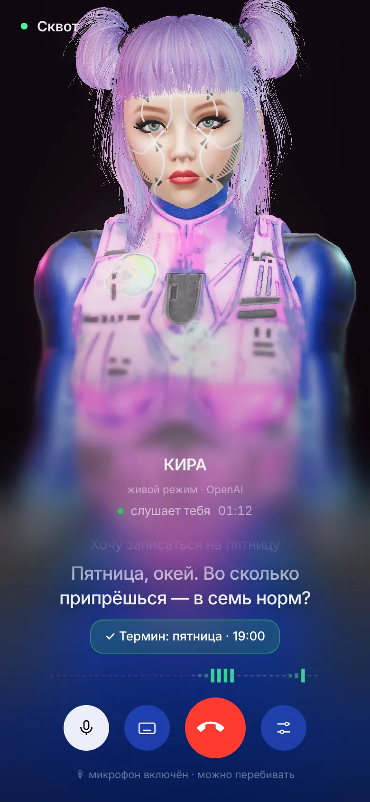
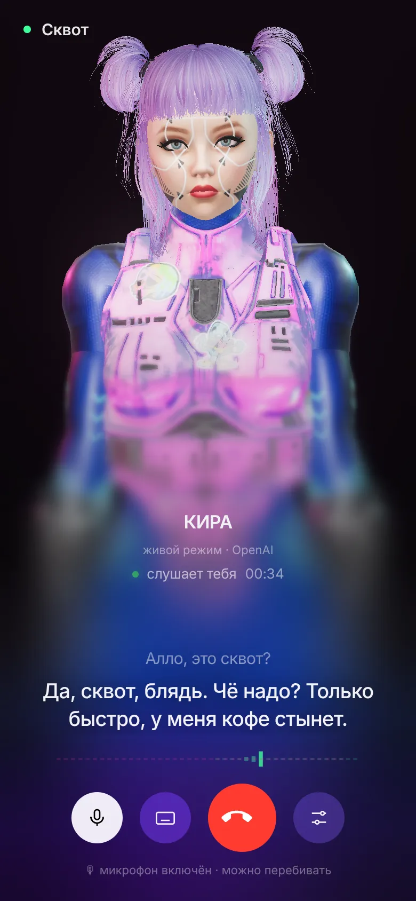
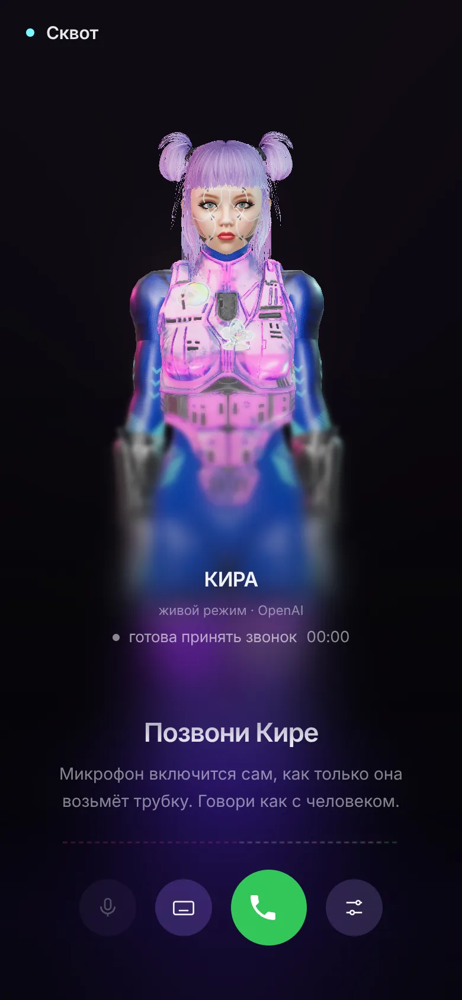
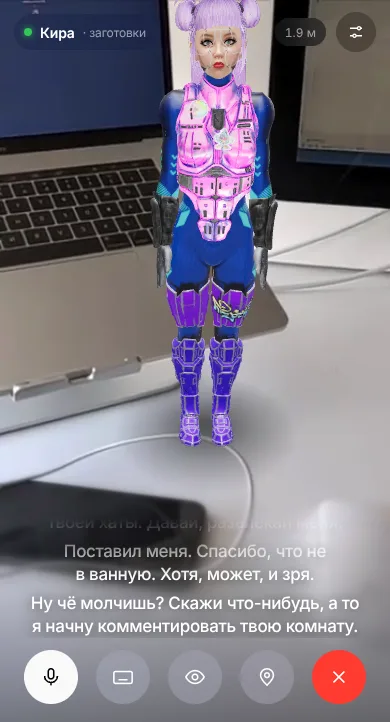

Гудки. Она берёт трубку.
Кнопка вызова прямо на сайте. Пара гудков — и Кира отвечает. Микрофон включается сам.
Кира — 3D-администратор «Сквота» с живым голосом. Берёт трубку прямо на сайте, слушает, огрызается, шутит чёрным юмором и ставит тебе термин. Без операторов, без «ваш звонок очень важен для нас».



Посетитель жмёт зелёную кнопку — и дальше всё как в нормальном телефонном разговоре. Только на том конце провода — Кира.
Кнопка вызова прямо на сайте. Пара гудков — и Кира отвечает. Микрофон включается сам.
Она ждёт, пока ты договоришь, отвечает голосом за полсекунды и разрешает себя перебивать.
Любой разговор она сводит к записи. Как только есть день и время — термин стоит.
Это не видео. Это настоящая Кира: живой мозг, живой голос, губы в такт. Разреши микрофон и попробуй:
«Алло, это сквот?»
«Да, сквот, блядь. Чё надо?» — примерно так
«Хочу записаться на пятницу, вечером»
«Ты вообще живая?» — спроси, ей нравится
Лучше всего в Chrome или Safari с наушниками. Если живой режим не подключится — Кира ответит заготовками.
Голос, мозг, лицо и характер собраны в одну страницу, которая встраивается куда угодно.
Речь идёт напрямую в голосовую модель и обратно — без «распознал → подумал → озвучил». Поэтому пауз нет, а интонация живая.
3D-модель с мимикой: рот, моргание, взгляд, камера подъезжает ближе, когда она говорит.
Нет связи с мозгом? Ответит из 120+ заготовок.
Кладёшь iframe — и у сайта появляется администратор с характером. Ключи остаются на сервере, наружу не светятся.

Открываешь камеру — Кира встаёт на пол в полный рост. Обходи, подходи вплотную, болтай. Тут она уже не ресепшен, а подруга для стёба.
Открыть AR ↗Демо работает прямо в браузере. Хочешь такую на свой сайт — со своим характером, голосом и сценарием — пиши.